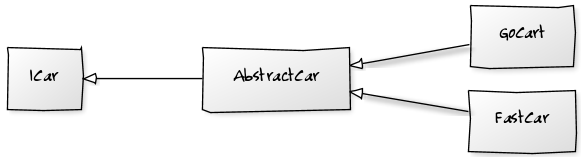
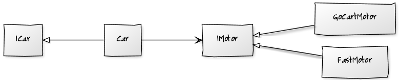
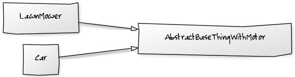
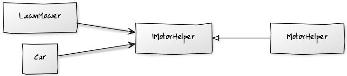

How to unit test abstract classes: extend with stubs?
I was wondering how to unit test abstract classes, and classes that extend abstract classes.
Should I test the abstract class by extending it, stubbing out the abstract methods, and then test all the concrete methods? Then only test the methods I override, and test the abstract methods in the unit tests for objects that extend my abstract class?
Should I have an abstract test case that can be used to test the methods of the abstract class, and extend this class in my test case for objects that extend the abstract class?
Note that my abstract class has some concrete methods.
Answer
There are two ways in which abstract base classes are used.
-
You are specializing your abstract object, but all clients will use the derived class through its base interface.
-
You are using an abstract base class to factor out duplication within objects in your design, and clients use the concrete implementations through their own interfaces.!
Solution For 1 - Strategy Pattern

If you have the first situation, then you actually have an interface defined by the virtual methods in the abstract class that your derived classes are implementing.
You should consider making this a real interface, changing your abstract class to be concrete, and take an instance of this interface in its constructor. Your derived classes then become implementations of this new interface.

This means you can now test your previously abstract class using a mock instance of the new interface, and each new implementation through the now public interface. Everything is simple and testable.
Solution For 2
If you have the second situation, then your abstract class is working as a helper class.

Take a look at the functionality it contains. See if any of it can be pushed onto the objects that are being manipulated to minimize this duplication. If you still have anything left, look at making it a helper class that your concrete implementation take in their constructor and remove their base class.

This again leads to concrete classes that are simple and easily testable.
As a Rule
Favor complex network of simple objects over a simple network of complex objects.
The key to extensible testable code is small building blocks and independent wiring.
Updated : How to handle mixtures of both?
It is possible to have a base class performing both of these roles... ie: it has a public interface, and has protected helper methods. If this is the case, then you can factor out the helper methods into one class (scenario2) and convert the inheritance tree into a strategy pattern.
If you find you have some methods your base class implements directly and other are virtual, then you can still convert the inheritance tree into a strategy pattern, but I would also take it as a good indicator that the responsibilities are not correctly aligned, and may need refactoring.
Update 2 : Abstract Classes as a stepping stone (2014/06/12)
I had a situation the other day where I used abstract, so I'd like to explore why.
We have a standard format for our configuration files. This particular tool has 3 configuration files all in that format. I wanted a strongly typed class for each setting file so, through dependency injection, a class could ask for the settings it cared about.
I implemented this by having an abstract base class that knows how to parse the settings files formats and derived classes that exposed those same methods, but encapsulated the location of the settings file.
I could have written a "SettingsFileParser" that the 3 classes wrapped, and then delegated through to the base class to expose the data access methods. I chose not to do this yet as it would lead to 3 derived classes with more delegation code in them than anything else.
However... as this code evolves and the consumers of each of these settings classes become clearer. Each settings users will ask for some settings and transform them in some way (as settings are text they may wrap them in objects of convert them to numbers etc.). As this happens I will start to extract this logic into data manipulation methods and push them back onto the strongly typed settings classes. This will lead to a higher level interface for each set of settings, that is eventually no longer aware it's dealing with 'settings'.
At this point the strongly typed settings classes will no longer need the "getter" methods that expose the underlying 'settings' implementation.
At that point I would no longer want their public interface to include the settings accessor methods; so I will change this class to encapsulate a settings parser class instead of derive from it.
The Abstract class is therefore: a way for me to avoid delegation code at the moment, and a marker in the code to remind me to change the design later. I may never get to it, so it may live a good while... only the code can tell.
I find this to be true with any rule... like "no static methods" or "no private methods". They indicate a smell in the code... and that's good. It keeps you looking for the abstraction that you have missed... and lets you carry on providing value to your customer in the mean time.
I imagine rules like this one defining a landscape, where maintainable code lives in the valleys. As you add new behaviour, it's like rain landing on your code. Initially you put it wherever it lands.. then you refactor to allow the forces of good design to push the behaviour around until it all ends up in the valleys.
Suggest
Write a Mock object and use them just for testing. They usually are very very very minimal (inherit from the abstract class) and not more.Then, in your Unit Test you can call the abstract method you want to test.
You should test abstract class that contain some logic like all other classes you have.